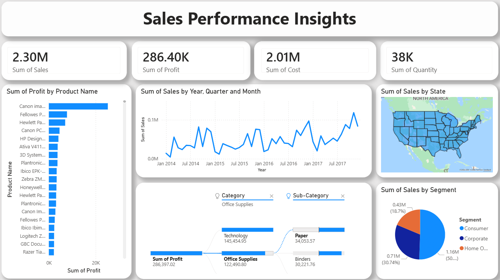
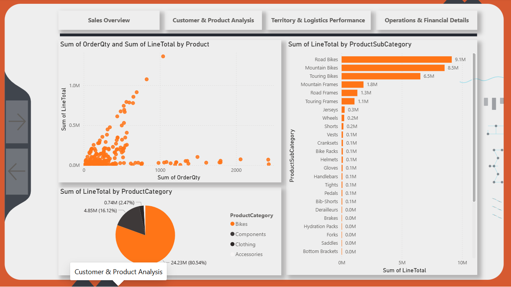

Home page
Projects
Projects
To see more
My best work
Filter by

Superstore-Sales-Analysis
Power BI Desktop
Power Query
Matplotlib
DAX
A holistic view of business performance — tracking KPIs across regions, product categories, and customer segments to surface the trends that matter.

Sales-Performance-Dashboard
Power BI Desktop
Power Query
A Power BI dashboard turning raw sales data into actionable insights across revenue, customers, and products.
Student-Admission-Records-python
Pandas
Seaborn
Matplotlib
Exploring admission patterns across student data to uncover what truly drives acceptance — from grades to test scores.
Decoding Bank Churn — A Behavioral Analysis
Pandas
Seaborn
Matplotlib
A deep-dive into bank customer behavior to uncover why customers churn — using Python to analyze activity patterns, transaction habits, and demographics.
SQL Analytics Toolkit
SQL Server
Window Functions
CTEs
Clean, ready-to-use SQL scripts for exploration, segmentation, and analytics.
Business-Performance-SQL
SQL Server
Window Functions
CTEs
Exploring retail data with SQL to surface revenue trends, top customers, and product performance.
FIlter by
Project overview
The goal of this project is to provide a holistic view of the business performance by tracking key metrics (KPIs) and identifying trends across various dimensions like geography, product categories, and customer segments.
Key Insights
Profitability Analysis • Technology dominates profit with 50.6%, making it the core business driver • Office Supplies provide steady profitability at 42.7% • Furniture underperforms at 6.4%, indicating need for strategic review • Product-level variance shows significant opportunity for optimization Market Segmentation • Consumer segment represents largest contributor with 1.2 M volume • Corporate segment shows substantial volume at 0.7M • Home Office remains underdeveloped but offers growth potential
Recommendations
• Check products that are losing money and decide if we should change price, reduce costs, or stop selling them
• Invest more in the Technology category because it makes high profit
• Improve the Furniture category to make it more profitable
• Focus on weak regions to increase sales there
• Create a plan for Home Office products to match remote work demand
• Use last quarter of the year for better stock and promotions planning
Tools Used
Project overview
This project features a comprehensive Power BI Dashboard designed to analyze sales performance, track key business metrics (KPIs), and provide actionable insights for decision-makers. The dashboard transforms raw sales data into an interactive visual story, helping stakeholders understand revenue trends, customer behavior, and product performance.
Key Insights
Dynamic KPI Tracking: Real-time visibility into Total Revenue, Profit Margins, Total Orders, and Year-over-Year (YoY) Growth. Trend Analysis: Time-series visualizations to identify seasonal patterns and sales fluctuations. Product & Category Performance: Deep dive into top-selling products and underperforming categories. Geographical Insights: Interactive maps showing sales distribution across different regions. Customer Segmentation: Analysis of customer demographics and purchasing habits. Interactive Filters: Slicers for Date, Region, and Product Category for customized reporting.
Data Modeling
Fact Table: Sales_Data containing transactional records.
Dimension Tables: Calendar, Products, Customers, and Regions.
Relationships are optimized for performance with one-to-many cardinality.
Tools Used
Project overview
This project focuses on analyzing bank customer data to understand customer behavior and identify the main reasons why customers leave the bank (churn). The goal is to help the bank improve customer retention and make better business decisions based on data.
Key Insights
Customers with low activity levels are more likely to leave the bank. A high number of bank contacts may indicate dissatisfaction and lead to churn. Customers with lower income or fewer transactions tend to leave more often. Certain customer segments (based on age or category) have a higher churn rate.
Tools Used
Pandas
Matplotlib
Seaborn
Project overview
This project focuses on analyzing student admission data to understand patterns and trends. The goal is to explore the factors that affect student acceptance, such as grades, test scores, and other criteria. This analysis helps in making better decisions and improving the admission process.
Key Insights
Students with higher scores have a greater chance of admission. Some features (like exam results) are more important than others. There are clear patterns in the data that help predict acceptance. Data visualization makes it easier to understand trends and relationships.
Tools Used
Pandas
Matplotlib
Seaborn
Project overview
A comprehensive collection of SQL scripts for data exploration, analytics, and reporting. These scripts cover various analyses such as database exploration, measures and metrics, time-based trends, cumulative analytics, segmentation , and more. This repository contains SQL queries designed to help data analysts and BI professionals quickly explore, segment, and analyze data within a relational database. Each script focuses on a specific analytical theme and demonstrates best practices for SQL queries.
Tools Used
SQL Server
Window Functions
CTEs
Project overview
This project focuses on performing an Exploratory Data Analysis (EDA) for a retail dataset using SQL Server. The goal is to extract actionable insights regarding business performance, customer demographics, and product profitability. The analysis covers key business areas such as total revenue, order trends, and customer segmentation.
Key Insights from the Script
Business Reach: Analysis of customer distribution across different countries to identify primary markets. Product Performance: Categorizing products to find the "major divisions" of revenue and identifying low-performing items for inventory optimization. Customer Lifetime Value: Identifying top customers based on total revenue and order volume to support loyalty program
Key Business Questions
What is the total revenue and the average selling price? How many unique customers have placed orders, and what is their demographic distribution (Gender & Country)? Which product categories generate the highest revenue? Who are the top-performing customers in terms of order frequency and total spend? What are the top 5 best-selling and bottom 5 worst-performing products?
Tools Used
SQL Server
Window Functions
CTEs